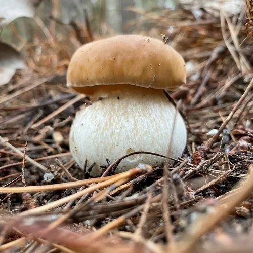

真菌 · 真菌界
美味牛肝菌 Boletus edulis

全球闻名的野生食用菌，菌盖褐色而厚实、菌管白色，菌肉肥厚鲜美，是西餐和高档料理中珍贵的食材。
- 分类
- 门担子菌门纲伞菌纲目牛肝菌目科牛肝菌科属牛肝菌属
- 栖息环境
- 针叶林、阔叶林和混交林的地面，与松、栎、桦等树木形成外生菌根
- 地理分布
- 欧洲、北美和东亚，中国云南、四川、黑龙江等地有分布
- 保护级别
- 暂无评估（IUCN 未评估，中国未列入重点保护名录）
物种志
美味牛肝菌是担子菌门牛肝菌目的外生菌根真菌，子实体单生或群生。菌盖半球形至平展，直径 5–15 cm，表面褐色至栗褐色，光滑而微黏；菌盖下面不是菌褶而是细密的菌管，幼时白色，成熟后变为黄绿色；菌柄粗壮，淡褐色并带细密的网状纹路；孢子印橄榄褐色。
美味牛肝菌与松、栎、桦等树木形成外生菌根，多生于针叶林和阔叶林的地面，夏秋季出菇，在欧洲、北美和东亚广泛分布，中国云南、四川、黑龙江等地有出产。它的菌肉肥厚、味道鲜美，干制后香气浓郁，是西餐和高档料理中的珍贵食材，也是欧洲最著名的野生食用菌之一。牛肝菌必须充分加热后食用，生的或半熟的菌肉可能引起肠胃不适，不要与有毒菌类混淆。
形态与习性
- 菌盖直径 5–15 cm，褐色至栗褐色
- 菌管幼时白色，成熟后变为黄绿色
- 菌柄粗壮，淡褐色，带网状纹路
- 孢子印橄榄褐色
- 采收期夏秋季，雨后林地上出菇
- 食用性可食，必须充分加热
- 经济价值干制后香气浓郁，是高档食材
趣味知识
- 美味牛肝菌的菌盖下面不是菌褶，而是细密的菌管。
- 它与松、栎等树木形成外生菌根，是森林生态的重要成员。
- 干制后香气更浓，是欧洲最著名的野生食用菌之一。
- 野生牛肝菌必须充分加热，生食可能引起肠胃不适。
生态关系
- 共生 → 马尾松 外生菌根共生